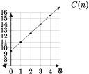
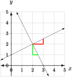

Introduce linear functions in algebraic, graphical, and verbal (applied) form.
Know the different algebraic forms of linear functions and the meanings of their associated parameters.
Find formulas for linear functions from data (both purely numerical and in context) to solve problems.
Linear function make up perhaps the most important class of functions in mathematics. Indeed, the basic premise of Calculus is to approximate more complicated functions with linear ones. However, despite their importance to higher mathematics, they come up in rather simple real world settings.
Fired Up Pizzeria charges \(\$ 9.50\) for a 12 inch pizza with no toppings, then an additional \(\$ 1.50\) per topping. Let's consider the function \(C\) that takes as an input the number of toppings, \(n\text{,}\) and gives the cost of a pizza, \(C(n)\text{,}\) in dollars. Construct a formula for this function and show its graph.
We first give a table of values for its outputs for several inputs:
Table5.1.2.
\(n\) toppings
\(0\)
\(1\)
\(2\)
\(3\)
\(4\)
\(C(n)\) dollars
\(9.50\)
\(11.00\)
\(12.50\)
\(14.00\)
\(15.50\)
The critical thing we notice in this table is that each time the input increases by one unit, an additional \(\$ 1.50\) is added to the cost. Hence, the number of times we add \(1.50\) to the initial (\(n=0\)) cost of \(\$ 9.50\) is equal to the input \(n\text{.}\) This process of repeated addition is precisely the definition of adding \(1.5 n\) to \(9.5\text{,}\) hence we have the formula
\begin{equation*}
C(n) = 9.5 + 1.5 n.
\end{equation*}
Using the table and/or the formula, we may then graph \(C\text{.}\)

Figure5.1.3.The graph of \(C(n) = 9.5+1.5n\text{.}\)
In this picture we have plotted the graph between integer values of \(n\text{,}\) even though that may not make sense for this function, so that we can see the defining feature of the graph; it is a straight line. Due to the geometric properties of triangles, we see that the ratio of the change in the output divided by the change input is always equal to \(1.5\text{.}\) This value is called the slope of this line.
Subsection5.1.1Intro to Linear Functions
Using the introductory example given above, we may characterize linear functions as in the following table:
Definition5.1.4.Linear Function.
A Linear Function is \(\ldots\)
Table5.1.5.
Linear Function
\(\longrightarrow\)
A process applied to the input that adds a fixed amount \(m\) to the output for each additional unit of input.
\(\longrightarrow\)
A function of the form \(y = f(x) = mx+b\text{,}\) where \(m\) and \(b\) are constants.
\(\longrightarrow\)
A function whose graph is a non-vertical line.
Note that when we say that a function is of the form \(f(x) = mx+b\text{,}\) what we really mean is that it can be put into that form throught some algebraic manipulation. The graphical meaning of the parameters \(m\) and \(b\) are as follows:
Key Concept5.1.6.
Graphical Meaning of \(m\) and \(b\)
\(m\) is the slope of the line. That is, given two points \((x_1,y_1)\) and \((x_2,y_2)\text{,}\) that lie on the graph of \(f\text{,}\)\(m\) is the ratio
\begin{equation*}
m = \frac{y_1-y_2}{x_1-x_2}.
\end{equation*}
If \(m>0\text{,}\) then the graph increases from left to right.
If \(m<0\text{,}\) then the graph decreases from left to right.
If \(m=0\text{,}\) then the graph is a horizontal line at height \(b\text{.}\)
If \(|m|\) is larger, the the line is steeper.
\(b\) is the output of \(f\) when \(x=0\text{.}\) In other words, it is the \(y\)-intercept of the graph of \(f\text{.}\)
Because a line is uniquely determined by two points, it is possible to find the formula for a linear function whose graph contains a given pair of points (provided the two points do not lie on a vertical line). For instance, suppose we are given that \((1,3)\) and \((3,4)\) are on the graph of \(f(x) = mx +b\text{.}\) Find the values of \(m\) and \(b\text{,}\) and hence the formula for \(f(x)\text{.}\)
\begin{equation*}
m = \frac{4-3}{3-1} = \frac{1}{2}.
\end{equation*}
Then we use the facts that \(f\) is of the form \(f(x) = \frac{1}{2}x+b\) and one of the two points is on the graph by substituting and solving for \(b\text{:}\)
\begin{align*}
3 \amp = \amp \frac{1}{2}\cdot 1 + b \\
\amp \updownarrow \amp \\
b \amp = \amp \frac{5}{2}.
\end{align*}
Thus \(f(x) = \frac{1}{2}x + \frac{5}{2}\text{.}\) Another way to see how this process works is by noting that \(\frac{1}{2}\) is added to the output for every extra unit of input. By starting at \((1,3)\) and subtracting \(\frac{1}{2}\) once to get back to when \(x=0\text{,}\) we also get \(b=f(0)=\frac{5}{2}\text{.}\)
Suppose we wish to find a formula for the profit \(P\) of selling \(q\) widgets. This is the revenue we get from selling the widgets minus the cost of producing them. Suppose we sell the widgets for \(\$ 35\) a piece, and it costs \(\$ 1000\) to set up production, plus \(\$ 15\) to make each widget.
Observe that the units of \(\$ /\text{widget}\) on the selling price and production cost are both rates of change of the form \((\text{function output})/(\text{function input})\text{.}\) This indicates the function is likely a linear function. Going to the formula we get
A ski shop rents skis for a fixed initial payment of \(A\) dollars and a charge of \(r\) dollars per day they are used. If a skier pays a total of \(A + 6r\) dollars, what is the meaning of the number \(6\text{?}\) Explain your answer as completely as possible.
Subsection5.1.2Forms of Linear Functions
The form \(y = f(x) = mx + b\) of a linear function is known as slope-intercept form. It is a very useful form. A more general (but non-unique) form is known as point-slope form.
Definition5.1.11.Point-Slope Form of a Linear Function.
The linear function of slope \(m\) passing through the point \((x_0,y_0)\) has the form
\begin{equation*}
y = f(x) = y_0 + m(x-x_0).
\end{equation*}
In order to understand point-slope form, all you need to do is ask (and answer) the following two questions:
Is \(f(x) = y_0 + m(x-x_0)\) the formula for a linear function with slope \(m\text{?}\) The answer is yes. All one needs to do is simplify and collect like terms to see that \(f(x) = mx + (y_0 - mx_0)\text{.}\) Thus we can say \(b = y_0 - mx_0\text{.}\)
Does the graph of \(f(x) = y_0 + m(x-x_0)\) pass through the point \((x_0,y_0)\text{?}\) Again the answer is yes because \(f(x_0) = y_0 + m(x_0-x_0) = y_0\text{.}\)
The graphical difference between point-slope form and slope-intercept form is that slope-intercept form puts on display the \(y\)-intercept, whereas slope-intercept form displays another point on the graph. Equipped with point-slope form, it is somewhat easier to find a formula for a linear function given two points; all you need to do is compute the slope.
Use point-slope form to find a formula for the linear function whose graph passes through \((12,7)\) and \((15,89)\text{.}\) Once you have the formula in point slope form, find the \(y\)-intercept and write it in slope-intercept form.
The slope-intercept form of the formula for a linear function is actually equal to the point-slope form for a specific point on the graph. What point is that?
Since the graphs of linear functions are lines, it makes sense to ask whether the two lines are parallel or perpendicular. To see whether two lines are parallel, they simply must have the same slope. So see whether two lines are perpendicular, consider the following figure:

Figure5.1.14.Perpendicular lines with triangles indicating their slopes.
From this (with triangles added to illustrate slope), we see that the magnitude of the change in \(y\) for an associated change in \(x\) on one graph is the same as the magnitude of the change in \(x\) for an associated change in \(y\) on the perpendicular graph. Also, the sign of the slope is opposite. Hence the slope of a line perpendicular to a line of slope \(m\) is \(-\dfrac{1}{m}\text{.}\)
Do the graphs of \(f(x) = 3x+1\) and \(g(x) = 25 + 3(x-8)\) intersect? Why or why not?
Subsection5.1.3Applications of Linear Functions
Linear functions arise in real-world applications involving one variable that changes at a constant rate relative to another. Once the linear function is found, the problems usually boil down to
finding an output for a given input (evaluating),
finding the input for a given output (solving a simple equations), or
finding when two linear functions are equal (find when graphs intersect).
Each of these problems is actually relatively straightforward from an algebraic point of view, given that you have formulas for your functions. The main difficulty is turning the words of the real world into mathematics.
As one climbs a mountain, the air temperature decreases by about \(3^{\circ}\)F for every \(1000\) foot increase in elevation. Suppose the temperature is \(60^{\circ}\)F when at an elevation of \(2000\) feet above sea level. Suppose we want the answer to the following questions:
What will the temperature be at an elevation of \(14,439\) feet?
What should the elevation be to be a “crisp” room temperature of \(65^{\circ}\)F?
Our first task must be to find a formula for temperature as a function of elevation. To achieve this, we first have to name variables (this can be hard at first). Let \(T\) be the temperature, in \(^{\circ}\)F, at an elevation \(h\) feet above sea level. The problem describes a rate of change of \(-3/1000\) in \(^{\circ}\)F/ft; this will be the slope of our linear function. This slope can often be seen using the units as the units of slope must be output units divided by input units. The sign is negative because the temperature decreases at this rate as \(h\) increases. The problem then describes a point on the graph of this function, \((2000,60)\text{.}\) Using point-slope form, we have
\begin{equation*}
T = -\frac{3}{1000}(h-2000) + 60.
\end{equation*}
The answer to part (a) is then obtained by substituting \(14,493\) for \(h\) to get
\begin{equation*}
T = -\frac{3}{1000}(14493-2000) + 60\approx 22.521^{\circ}\mbox{F}.
\end{equation*}
To answer part (b), we need to substitute \(65\) for \(T\text{,}\) and solve for \(h\text{:}\)
Why is the formula for \(T\) as a function of \(h\) given in the last example more useful to a climber whose elevation is near 2000 feet than to one near sea level? What equivalent formula would be more useful to someone near sea level? Explain.
where \(P\) is the pressure of a gas, \(V\) is its volume, \(T\) is its temperature in \(^{\circ}\)C, \(n\) is the number of moles of gas, \(R\) is a constant, and \(z\) is the value of absolute zero in \(^{\circ}\)C. If \(n\) and \(V\) are constant, like when the gas is in a sealed container, we have a linear function for \(P\) as a function of \(T\text{:}\)
\begin{equation*}
P = \frac{nR}{V} (T-z).
\end{equation*}
What is the slope of the graph of \(P\) (just in symbols, not the number)?
Suppose we measure \(P\) to be \(3.5\) when \(T = 70\text{,}\) and \(3.602\) when \(T = 80\text{.}\) Find the slope of the graph of \(P\) from this data.
Use the data and the value of the slope from part (b) to give an approximate value of \(z\text{.}\) Is this close to the value you may have learned in a science class (or can look up)?